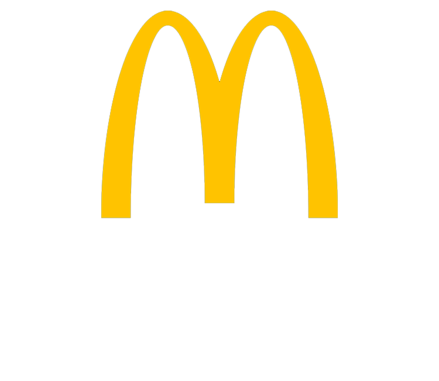
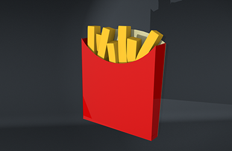
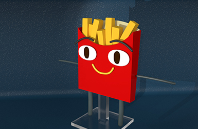
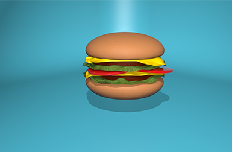
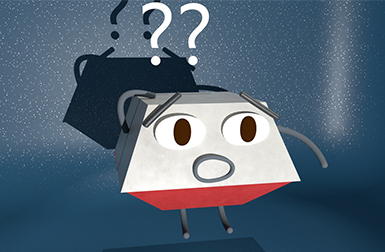
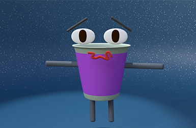

Sprint 1
Frietjes
Voor de McDonalds opdracht heb ik een paar 3D modellen gemaakt waarvan we animaties zouden maken. Ik heb de modellen gemaakt in Cinema 4D. Hier had ik al wel wat ervaring mee, alleen heb ik er nooit echt modellen in gemaakt. Dat was dus wel even wennen. Hier zie je de modellen van de McDonalds frietjes die ik heb gemaakt. Bij de eerste iteratie heb ik alleen het model gemaakt. Bij de 2e iteratie heb ik er een gezicht, armen, benen en een standaard aan toegevoegd.

Iteratie 1

Iteratie 2
Hamburger

Iteratie 1

Iteratie 2

Iteratie 3
Het tweede model dat ik heb gemaakt is Quinten de Quarter Pounder. Hier heb ik een paar modellen van gemaakt. Bij de eerste iteratie heb ik een normaal broodje hamburger gemaakt in Cinema 4D. Bij de tweede iteratie heb ik de lichaamsdelen toegevoegd en heb ik het model op een standaard gezet. Bij de derde iteratie heb ik alle stukken uit elkaar gehaald waardoor het lijkt alsof de hamburger naar beneden valt zoals bij het idee van onze app.
Big Mac

Beau de Big Mac box
Het derde model dat ik heb gemaakt is Beau de Big Mac box. Zijn uitstraling is nieuwsgierig. Dit zie je aan de manier hoe hij kijkt en omdat hij aan zijn hoofd krabt. Om dit extra duidelijk te maken heb ik 2 vraagtekens boven zijn hoofd geplaatst.
McFlurry

Fleur de McFlurry